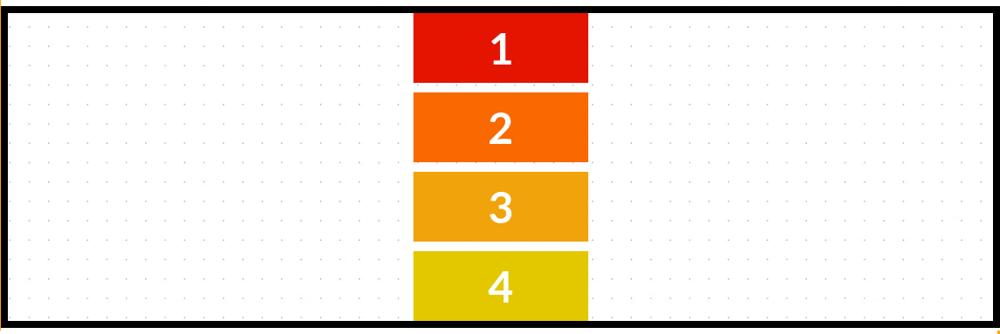

Properties:
border: 8px solid black;
height: 30vh;
display: flex;
flex-direction: row;
width (.box): 200px; (the width is not applied when using with flex no matter the value)
Properties(c-37):
flex-basis: 50% (flex basis replace the width of the container) - even the width of the individual item is set to 50% of the container, since it cannot wrap because too many element then they going have to shrink
display: flex
height: 30vh
flex-direction: row
flex-wrap: wrap (to see how flex basis can works properly, flex-wrap is turned off)
justify-content: space-between
align-items: center
Axis-main: left-to-right (default)
Axis-cross: top-to-bottom (default)
Properties(c-38):
flex-basis: 50% (flex basis replace the width of the container)
display: flex
height: 35vh
flex-direction: column (in the column, flex basis is controlling the size of along the main axis, whichever the direction may be. Also flex basis has higher priority than width if ever to use together)
flex-wrap: wrap (to see how flex basis can works properly, flex-wrap is turned off)
justify-content: space-between
align-items: center
Axis-main: left-to-right (default)
Axis-cross: top-to-bottom (default)
This is the result of using width in flex-direction: column, instead of flex-basis. Noticed how in flex basis the width is strecthed in main axis instead of cross axis (width)
Properties(c-39):
flex-basis: 50% (flex basis replace the width of the container) - even the width of the individual item is set to 50% of the container, since it cannot wrap because too many element then they going have to shrink
display: flex
height: 30vh
flex-direction: row
flex-wrap: wrap (to see how flex basis can works properly, flex-wrap is turned off)
justify-content: space-between
align-items: center
Axis-main: left-to-right (default)
Axis-cross: top-to-bottom (default)